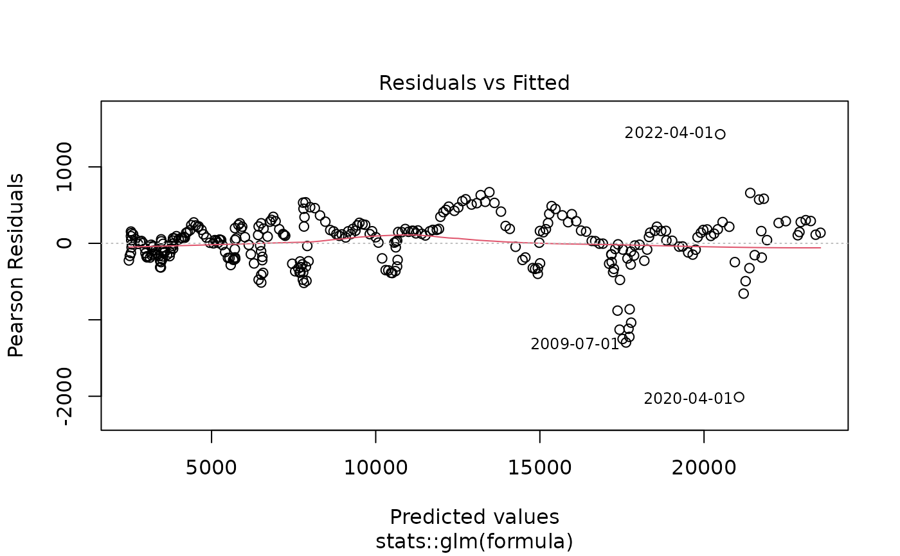

yth_glm fits a generalized linear model suggested by James D. Hamilton as a better alternative to the Hodrick-Prescott Filter.
yth_glm(x, h = 8, p = 4, ...)
Arguments
| x | A univariate |
|---|---|
| h | An |
| p | An |
| ... | all arguments passed to the function |
Value
yth_glm returns a generalized linear model object of class glm,
which inherits from lm.
Details
For time series of quarterly periodicity, Hamilton suggests parameters of h = 8 and p = 4, or an \(AR(4)\) process, additionally lagged by \(8\) lookahead periods. Econometricians may explore variations of h. However, p is designed to correspond with the seasonality of a given periodicity and should be matched accordingly. $$y_{t+h} = \beta_0 + \beta_1 y_t + \beta_2 y_{t-1} + \beta_3 y_{t-2} + \beta_4 y_{t-3} + v_{t+h}$$ $$\hat{v}_{t+h} = y_{t+h} - \hat{\beta}_0 + \hat{\beta}_1 y_t + \hat{\beta}_2 y_{t-1} + \hat{\beta}_3 y_{t-2} + \hat{\beta}_4 y_{t-3}$$ Which can be rewritten as: $$y_{t} = \beta_0 + \beta_1 y_{t-8} + \beta_2 y_{t-9} + \beta_3 y_{t-10} + \beta_4 y_{t-11} + v_{t}$$ $$\hat{v}_{t} = y_{t} - \hat{\beta}_0 + \hat{\beta}_1 y_{t-8} + \hat{\beta}_2 y_{t-9} + \hat{\beta}_3 y_{t-10} + \hat{\beta}_4 y_{t-11}$$
References
James D. Hamilton. Why You Should Never Use the Hodrick-Prescott Filter. NBER Working Paper No. 23429, Issued in May 2017.
See also
Examples
#> #> Call: #> stats::glm(formula = formula, family = ..1, data = data) #> #> Deviance Residuals: #> Min 1Q Median 3Q Max #> -2092.34 -165.56 37.48 197.80 640.61 #> #> Coefficients: #> Estimate Std. Error t value Pr(>|t|) #> (Intercept) 224.3629 37.8312 5.931 8.84e-09 *** #> xt_0 1.6942 0.3096 5.472 9.87e-08 *** #> xt_1 -0.5404 0.5041 -1.072 0.285 #> xt_2 -0.3198 0.5050 -0.633 0.527 #> xt_3 0.1898 0.3113 0.610 0.543 #> --- #> Signif. codes: 0 ‘***’ 0.001 ‘**’ 0.01 ‘*’ 0.05 ‘.’ 0.1 ‘ ’ 1 #> #> (Dispersion parameter for gaussian family taken to be 99574.7) #> #> Null deviance: 7702056096 on 285 degrees of freedom #> Residual deviance: 27980490 on 281 degrees of freedom #> (11 observations deleted due to missingness) #> AIC: 4110.1 #> #> Number of Fisher Scoring iterations: 2 #>